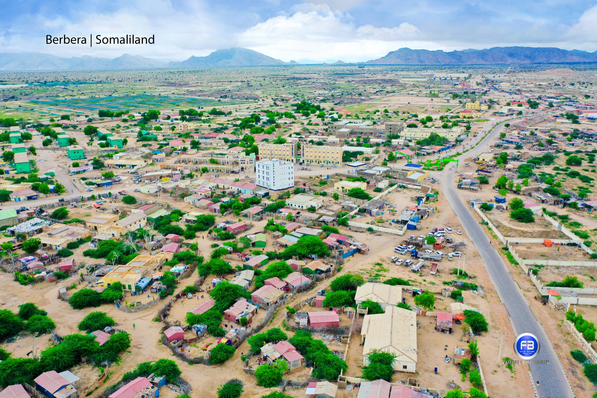
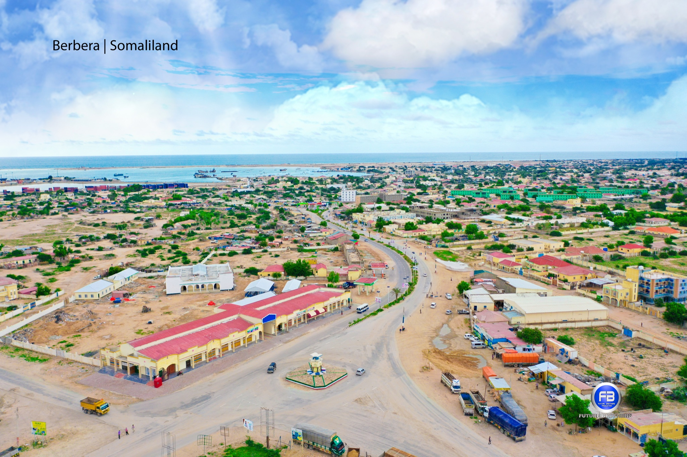

Dekedda Berbera
Dekedda weyn ee Gacanka Cadmeed.
Gacanka Cadmeed
Berbera waa dekedda waqooyi. Maraakiibta iyo kalluumeysiga ayaa ka shaqeeya xeebta, buurahana waxay ka soo horjeedaan badda.
Xiga: KismaayoDekedda weyn ee Gacanka Cadmeed.

Guryaha qadiimka ah ee xeebta u dhow.

Xeebta badda ee magaalada agteeda.